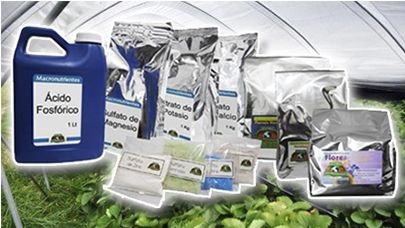

En la hidroponía, las plantas no obtienen nutrientes del suelo, sino de una solución nutritiva disuelta en agua.
🍃 Macronutrientes: Son los más importantes para el crecimiento, como nitrógeno (N), fósforo (P) y potasio (K).
🧬 Micronutrientes: Se necesitan en menor cantidad, como hierro, zinc y manganeso, pero son esenciales.
⚖️ Equilibrio: Es fundamental mantener las proporciones correctas para evitar deficiencias o excesos.
💧 Disolución en agua: Los nutrientes se mezclan en el agua para que las raíces los absorban fácilmente.
🌡️ Control del pH: El nivel de acidez del agua influye en la absorción de nutrientes.